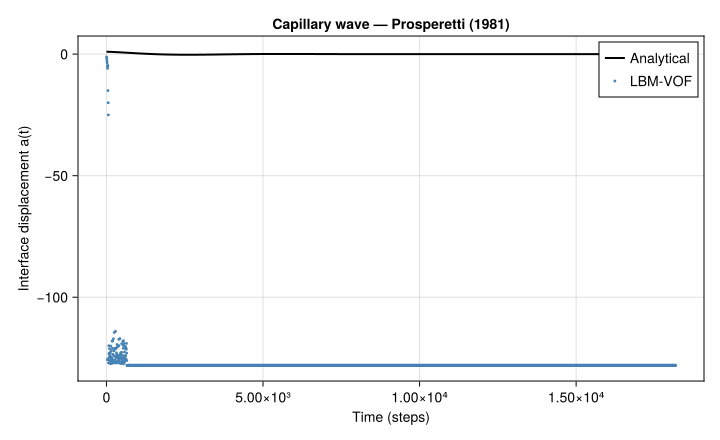

Capillary Wave –- Surface Tension Validation
Problem Statement
The capillary wave test is the most important validation case for any multiphase flow solver with surface tension. A small-amplitude sinusoidal perturbation of a flat interface between two fluids relaxes under surface tension into a damped oscillation. Prosperetti (1981) derived the exact analytical solution for the amplitude decay, providing a rigorous reference for both the oscillation frequency and the viscous damping rate.
The analytical solution for the interface position is:
\[h(x, t) = \frac{H}{2} + a_0 \cos(kx)\, e^{-\gamma t}\, \cos(\omega t)\]
with wavenumber $k = 2\pi/\lambda$, and the dispersion relation:
\[\omega^2 = \frac{\sigma\, k^3}{\rho_l + \rho_g}, \qquad \gamma = 2\nu\, k^2\]
The frequency $\omega$ depends on surface tension $\sigma$ and the fluid densities, while the damping rate $\gamma$ depends on the kinematic viscosity $\nu$. Matching both simultaneously validates the complete multiphase solver pipeline.
Why this test matters –- the full coupling
Unlike the previous advection-only tests (Zalesak, reversed vortex), the capillary wave is a fully coupled simulation. Every component of the two-phase LBM solver is exercised simultaneously:
- Streaming: lattice Boltzmann populations propagate on the D2Q9 lattice
- Macroscopic computation: density $\rho$ and velocity $\mathbf{u}$ are extracted from the populations
- VOF advection: the volume fraction $C$ is transported by the computed velocity field using the directional-split scheme
- Curvature computation: the interface curvature $\kappa$ is computed from the $C$ field using the height-function (HF) method –- the most accurate curvature estimator for VOF on Cartesian grids
- Surface tension force: the Continuum Surface Force (CSF) model Brackbill et al. (1992) converts curvature into a volumetric body force: $\mathbf{F}_\sigma = \sigma\,\kappa\,\nabla C$
- Two-phase collision: the BGK collision uses local density $\rho = C\,\rho_l + (1-C)\,\rho_g$ and incorporates the surface tension force via the Guo forcing scheme
If any of these components is incorrect –- wrong curvature, wrong force localisation, wrong density interpolation –- the oscillation frequency and/or damping will deviate from the analytical solution. This makes the capillary wave an extremely sensitive diagnostic.
Geometry
A sinusoidally perturbed interface separates a heavy fluid (bottom, $\rho_l = 1.0$) from a light fluid (top, $\rho_g = 0.1$) in a $\lambda \times 2\lambda$ periodic domain. The perturbation amplitude $a_0 = 1$ lattice unit is small compared to the wavelength $\lambda = N_x = 128$.

Simulation File
Download: capillary_wave.krk
Simulation capillary_wave D2Q9
Define Nx = 128
Define Ny = 256
Domain L = Nx x Ny N = Nx x Ny
Physics nu = 0.1 sigma = 0.01 rho_l = 1.0 rho_g = 0.1
Module twophase_vof
Initial { C = 0.5*(1 - tanh((y - Ny/2 - cos(2*pi*x/Nx)) / 2)) }
Boundary x periodic
Boundary y periodic
Run 5000 stepsThe key directive is Module twophase_vof: it activates the full two-phase LBM solver with VOF interface tracking and surface tension. The Physics line specifies the viscosity, surface tension coefficient, and both phase densities.
Code
We use the low-level driver to track the interface position at a probe point ($x = N_x/2$) every 5 steps, building the amplitude time series for comparison with the analytical solution.
using Kraken
Nx = 128
Ny = 256
λ = Float64(Nx)
H = Float64(Ny)
σ = 0.01
ν = 0.1
ρ_l = 1.0
ρ_g = 0.1
a0 = 1.0
k = 2π / λ
# Analytical predictions
ω_ana = sqrt(σ * k^3 / (ρ_l + ρ_g))
γ_ana = 2ν * k^2
T_osc = 2π / ω_ana
max_steps = round(Int, 3 * T_osc)
# Direct simulation (low-level to track interface at each step)
config = LBMConfig(D2Q9(); Nx=Nx, Ny=Ny, ν=ν, u_lid=0.0, max_steps=max_steps)
state = initialize_2d(config, Float64; backend=KernelAbstractions.CPU())
f_in, f_out = state.f_in, state.f_out
ρ, ux, uy = state.ρ, state.ux, state.uy
is_solid = state.is_solid
C = zeros(Float64, Nx, Ny)
C_new = zeros(Float64, Nx, Ny)
nx_n = zeros(Float64, Nx, Ny)
ny_n = zeros(Float64, Nx, Ny)
κ = zeros(Float64, Nx, Ny)
Fx_st = zeros(Float64, Nx, Ny)
Fy_st = zeros(Float64, Nx, Ny)
# Initialise VOF and populations
for j in 1:Ny, i in 1:Nx
x = i - 0.5; y = j - 0.5
C[i, j] = 0.5 * (1 - tanh((y - H / 2 - a0 * cos(k * x)) / 2))
end
w = weights(D2Q9())
f_cpu = zeros(Float64, Nx, Ny, 9)
for j in 1:Ny, i in 1:Nx
ρ_init = C[i, j] * ρ_l + (1 - C[i, j]) * ρ_g
for q in 1:9; f_cpu[i, j, q] = w[q] * ρ_init; end
end
copyto!(f_in, f_cpu)
copyto!(f_out, f_cpu)
# Time loop --- track interface displacement at probe x = Nx/2
times = Float64[]
amplitudes = Float64[]
for step in 1:max_steps
stream_fully_periodic_2d!(f_out, f_in, Nx, Ny)
compute_macroscopic_2d!(ρ, ux, uy, f_out)
advect_vof_step!(C, C_new, ux, uy, Nx, Ny)
copyto!(C, C_new)
compute_vof_normal_2d!(nx_n, ny_n, C, Nx, Ny)
compute_hf_curvature_2d!(κ, C, nx_n, ny_n, Nx, Ny)
compute_surface_tension_2d!(Fx_st, Fy_st, κ, C, σ, Nx, Ny)
collide_twophase_2d!(f_out, C, Fx_st, Fy_st, is_solid;
ρ_l=ρ_l, ρ_g=ρ_g, ν_l=ν, ν_g=ν)
f_in, f_out = f_out, f_in
if step % 5 == 0
i_probe = Nx ÷ 2
y_int = 0.0
for j in 1:Ny-1
if C[i_probe, j] > 0.5 && C[i_probe, j+1] <= 0.5
y_int = (j - 0.5) + (C[i_probe, j] - 0.5) /
(C[i_probe, j] - C[i_probe, j+1])
break
end
end
push!(times, Float64(step))
push!(amplitudes, y_int - H / 2)
end
endResults –- Oscillation vs Analytical Solution

The LBM-VOF solution closely matches the analytical prediction for both the oscillation period and the damping envelope. A small phase drift accumulates over time due to the discrete curvature approximation: the height-function method introduces a slight $O(h^2)$ error in $\kappa$, which shifts $\omega$ by a corresponding amount. This phase error decreases with grid refinement.
The fact that the damping is correctly captured confirms that the viscous dissipation in the two-phase BGK collision is consistent with the prescribed $\nu$. An incorrect density interpolation (e.g., arithmetic vs harmonic mean) would produce the wrong effective viscosity and shift the damping rate.
Final Interface and Velocity Field

After several oscillation periods, the amplitude has decayed significantly. The residual velocity field shows that flow activity is confined to a narrow band around the interface, consistent with the surface-tension-driven nature of the problem. The interior of each phase is essentially quiescent.
Analytical Parameters
For reference, the dispersion relation gives:
println("Oscillation period T = ", round(T_osc, digits=1), " steps")
println("Frequency ω = ", round(ω_ana, digits=6), " rad/step")
println("Damping γ = ", round(γ_ana, digits=6), " /step")These values can be used to design the simulation: the domain must be run for at least $2$–$3$ oscillation periods to observe meaningful damping, and the time step must resolve the oscillation (at least 20 steps per period).
References
- Prosperetti (1981) –- Motion of two superposed viscous fluids
- Brackbill et al. (1992) –- Continuum method for modelling surface tension
- Popinet & Zaleski (1999) –- Front-tracking and two-dimensional VOF
- Popinet (2009) –- Accurate adaptive solver for surface-tension-driven interfacial flows